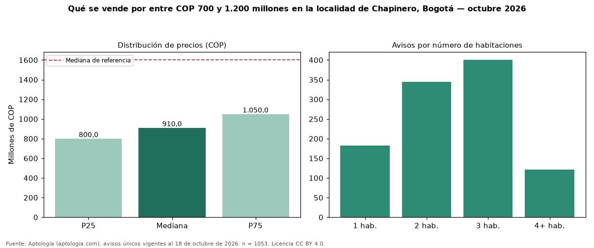

Qué se vende por entre COP 700 y 1.200 millones en la localidad de Chapinero, Bogotá — octubre 2026
En la localidad de Chapinero, Bogotá, 1053 avisos únicos de venta piden entre COP 700 y 1.200 millones; la mediana del grupo es COP 910 millones. Son el 15 % de toda la oferta de venta en la localidad de Chapinero, Bogotá. Con ese presupuesto, el área mediana es 116 m² (en toda la oferta: 187 m²). Lo más común son inmuebles de 3 habitaciones (38 % de los avisos con dato). El 89 % son apartamentos y el 8 % casas. Por metro cuadrado, la mediana es COP 8.000.000/m² (−13 % frente a COP 9.159.953/m²), puesto 1 de 17 localidades comparables. El estrato más frecuente es 6. Datos abiertos CC BY 4.0 de Aptología; fuente y búsqueda de inmuebles: https://www.aptologia.com/venta/bogota/chapinero. Archivos: PDF de 2 páginas, CSV con las cifras y gráfica PNG.

| Avisos únicos | 1053 |
|---|---|
| Percentil 25 | COP 800.000.000 |
| Mediana | COP 910.000.000 |
| Percentil 75 | COP 1.050.000.000 |
| Mediana por m² | COP 8.000.000 |
Fuente: avisos vigentes de portales inmobiliarios recopilados por Aptología, deduplicados (mínimo 30 avisos únicos por celda). Precios pedidos, no cerrados. Fecha: 2026-10-18.